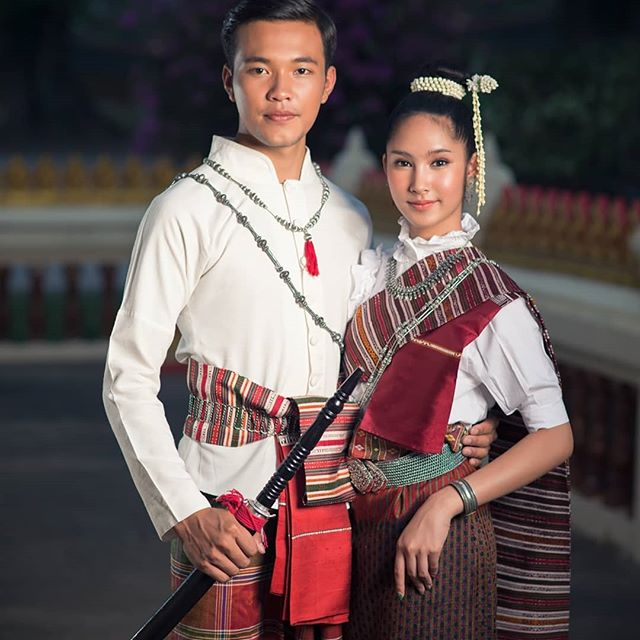

| รูปภาพ |
ภาค |
ข้อมูล |
|
|
ภาคกลาง |
๑.ภาคกลาง การแต่งกายในชีวิตประจำวันทั่วไป ชายนุ่งกางเกงครึ่งน่อง สวมเสื้อแขนสั้น คาดผ้าขาวม้า ส่วนหญิง จะนุ่งซิ่นยาว สวมเสื้อแขนสั้นหรือยาว การแต่งกายผ้าขาวม้า ภาคกลาง จะมีลวดลายเป็นตารางสก๊อต เรียกว่า “ผ้าขาวม้า”
ลักษณะการแต่งกาย
ผู้ชาย สมัยก่อนการเปลี่ยนแปลงระบอบการปกครอง นิยมสวมใส่โจงกระเบนสวมเสื้อสีขาว ติดกระดุม ๕ เม็ด ที่เรียกว่า "ราชประแตน" ไว้ผมสั้นข้างๆตัดเกรียนถึงหนังศีรษะข้างบนหวีแสกกลาง
ผู้หญิง สมัยก่อนการเปลี่ยนแปลงระบอบการปกครอง นิยมสวมใส่ผ้าซิ่นยาวครึ่งแข้ง ห่มสไบเฉียงตามสมัยอยุธยา ทรงผมเกล้าเป็นมวย และสวมใส่เครื่องประดับเพื่อความสวยงาม
|
|  |
ภาคอีสาน |
๒. ภาคอีสาน ผู้ชาย ส่วนใหญ่นิยมสวมเสื้อแขนสั้นสีเข้มๆ ที่เราเรียกว่า "ม่อห่อม" สวมกางเกงสีเดียวกับเสื้อจรดเข่า นิยมใช้ผ้าคาดเอวด้วยผ้าขาวม้า ผู้หญิง การแต่งกายส่วนใหญ่นิยมสวมใส่ผ้าซิ่นแบบทอทั้งตัว สวมเสื้อคอเปิดเล่นสีสัน ห่มผ้าสไบเฉียง สวมเครื่องประดับตามข้อมือ ข้อเท้าและคอ
|
 |
ภาคเหนือ |
๓. ภาคเหนือ ชาวพื้นเมืองจะแต่งกายตามเชื้อชาติโดยทั่วไป ลักษณะการแต่งกายของคนภาคเหนือการแต่งกาย เป็นสิ่งสำคัญสิ่งหนึ่ง ที่บ่งบอกเอกลักษณ์ของคนแต่ละพื้นถิ่น สำหรับในเขตภาคเหนือหรือดินแดนล้านนาในอดีต ปัจจุบันการแต่งกายแบบพื้นเมืองได้รับความสนใจมากขึ้น แต่เนื่องจากในท้องถิ่นนี้มีผู้คนหลากหลายชาติพันธุ์อาศัยอยู่ เช่น ไทยวน ไทลื้อ ไทเขิน ไทใหญ่ และอิทธิพลจากละครโทรทัศน์ ทำให้การแต่งกายแบบพื้นเมืองมีความสับสนเกิดขึ้น ดังนั้นคณะทำงานทำนุบำรุงศิลปวัฒนธรรม กลุ่มสถาบันอุดมศึกษาภาคเหนือ จึงได้ระบุข้อไม่ควรกระทำในการแต่งกายชุดพื้นเมือง ของ “แม่ญิงล้านนา” เอาไว้ว่า
๑.ไม่ควรใช้ผ้าโพกศีรษะ ในกรณีที่ไม่ใช่ชุดแบบไทลื้อ
๒. ไม่ควรเสียบดอกไม้ไหวจนเต็มศีรษะ
๓. ไม่ควรใช้ผ้าพาดบ่าลากหางยาว หรือคาดเข็มขัดทับ และผ้าพาดที่ประยุกต์มาจาก ผ้าตีนซิ่นและผ้า “ตุง” ไม่ควรนำมาพาด
๔. ตัวซิ่นลายทางตั้งเป็นซิ่นแบบลาว ไม่ควรนำมาต่อกับตีนจกไทยวน
|
| |
ภาคใต้ |
๔.ภาคใต้ ชาวใต้นิยม แต่งกายแบบเรียบง่าย หลวม ๆ ส่วนมากใช้ผ้าฝ้าย รูปแบบเครื่องนุ่งห่มส่วนใหญ่คล้ายกับของมาเลเซียและอินโดนีเซีย เพราะอยู่ในลักษณะอากาศแบบเดียวกัน ผ้าพื้นเมืองที่มีชื่อเสียงของของภาคใต้ คือ ผ้ายก ผ้าจวน ผ้าไหมพุมเรียง และผ้าปาเต๊ะ ซึ่งเป็นผ้าที่นิยมกันในภาคใต้ตอนล่าง เป็นต้น |